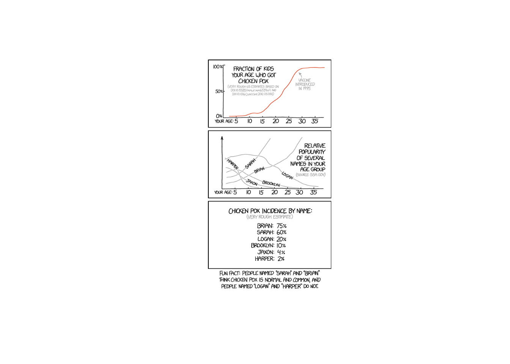

Lesson 19: Two Mean T-Test
Lesson Administration
Calendar
Day 1
Day 2
Exploration Exercise 3.2 (Next Lesson - HARD COPY!!)
Lets go over the grading plan and solution and take about 10 minutes.
- ⏰ Due on Lesson 19
- Day 1: Tuesday, 16 Oct 2025
- Day 2: Wednesday, 17 Oct 2025
Milestone 5
- Due 0700 on 7 November
- Instructions
SIL 2
Running Review
Review: \(z\)-Tests for One Proportion
For all cases:
\(H_0:\ \pi = \pi_0\)
\[ z = \frac{\hat{p} - \pi_0}{\sqrt{\frac{\hat{p}\,(1-\hat{p})}{n}}} \]
| Alternative Hypothesis | Formula for \(p\)-value | R Code |
|---|---|---|
| \(H_A:\ \pi > \pi_0\) | \(p = 1 - \Phi(z)\) | p_val <- 1 - pnorm(z_stat) |
| \(H_A:\ \pi < \pi_0\) | \(p = \Phi(z)\) | p_val <- pnorm(z_stat) |
| \(H_A:\ \pi \neq \pi_0\) | \(p = 2 \cdot (1 - \Phi(|z|))\) | p_val <- 2 * (1 - pnorm(abs(z_stat))) |
Where:
- \(\hat{p} = R/n\) (sample proportion)
- \(\pi_0\) = hypothesized proportion under \(H_0\)
- \(\Phi(\cdot)\) = cumulative distribution function (CDF) of the standard normal distribution
Validity Conditions
- Number of successes and failures must be greater than 10.
Confidence Interval for \(\pi\) (one proportion)
\[ \hat{p} \;\pm\; z_{\,1-\alpha/2}\,\sqrt{\frac{\hat{p}\,(1-\hat{p})}{n}} \]
I am \((1 - \alpha)\%\) confident that the true population proportion \(\pi\) lies between \([\text{lower bound}, \text{upper bound}]\).
Review: \(t\)-Tests for One Mean
For all cases:
\(H_0:\ \mu = \mu_0\)
\[ t = \frac{\bar{x} - \mu_0}{s / \sqrt{n}} \]
| Alternative Hypothesis | Formula for \(p\)-value | R Code |
|---|---|---|
| \(H_A:\ \mu > \mu_0\) | \(p = 1 - F_{t,df}(t)\) | p_val <- 1 - pt(t_stat, df) |
| \(H_A:\ \mu < \mu_0\) | \(p = F_{t,df}(t)\) | p_val <- pt(t_stat, df) |
| \(H_A:\ \mu \neq \mu_0\) | \(p = 2 \cdot (1 - F_{t,df}(|t|))\) | p_val <- 2 * (1 - pt(abs(t_stat), df)) |
Where:
- \(\bar{x}\) = sample mean
- \(\mu_0\) = hypothesized mean under \(H_0\)
- \(s\) = sample standard deviation
- \(n\) = sample size
- \(df = n - 1\) (degrees of freedom)
- \(F_{t,df}(\cdot)\) = CDF of Student’s \(t\) distribution with \(df\) degrees of freedom
Validity Conditions
- Sample size must be greater than 30.
Confidence Interval for \(\mu\) (one mean)
\[ \bar{x} \;\pm\; t_{\,1-\alpha/2,\;df}\,\frac{s}{\sqrt{n}}, \qquad df = n-1 \] I am \((1 - \alpha)\%\) confident that the true population mean \((\mu)\) lies between \([\text{lower bound}, \text{upper bound}]\).
Review: \(z\)-Tests for Two Proportions
For all cases:
\(H_0:\ \pi_1 - \pi_2 = 0\)
\[ z \;=\; \frac{(\hat{p}_1 - \hat{p}_2) - (\pi_1 - \pi_2)}{\sqrt{\hat{p}(1-\hat{p})\left(\tfrac{1}{n_1} + \tfrac{1}{n_2}\right)}} \]
Where the pooled proportion is
\[ \hat{p} \;=\; \frac{x_1 + x_2}{n_1 + n_2}. \]
| Alternative Hypothesis | Formula for \(p\)-value | R Code |
|---|---|---|
| \(H_A:\ \pi_1 - \pi_2 > 0\) | \(p = 1 - \Phi(z)\) | p_val <- 1 - pnorm(z_stat) |
| \(H_A:\ \pi_1 - \pi_2 < 0\) | \(p = \Phi(z)\) | p_val <- pnorm(z_stat) |
| \(H_A:\ \pi_1 - \pi_2 \neq 0\) | \(p = 2 \cdot (1 - \Phi(|z|))\) | p_val <- 2 * (1 - pnorm(abs(z_stat))) |
Where:
- \(\hat{p}_1 = x_1/n_1\) (sample proportion in group 1)
- \(\hat{p}_2 = x_2/n_2\) (sample proportion in group 2)
- \(\pi_1, \pi_2\) = hypothesized proportions under \(H_0\)
- \(\Phi(\cdot)\) = cumulative distribution function (CDF) of the standard normal distribution
Validity Conditions
- Each group must have at least 10 successes and 10 failures.
Confidence Interval for \(\pi_1 - \pi_2\) (unpooled SE)
\[ (\hat{p}_1 - \hat{p}_2) \;\pm\; z_{\,1-\alpha/2}\, \sqrt{\tfrac{\hat{p}_1(1-\hat{p}_1)}{n_1} + \tfrac{\hat{p}_2(1-\hat{p}_2)}{n_2}} \]
I am \((1 - \alpha)\%\) confident that the true difference in population proportions \((\pi_1 - \pi_2)\) lies between \([\text{lower bound}, \text{upper bound}]\).
Review: \(t\)-Tests for Two Means
For all cases:
\(H_0:\ \mu_1 - \mu_2 = 0\)
\[ t = \frac{(\bar{x}_1 - \bar{x}_2) - 0}{\sqrt{\tfrac{s_1^2}{n_1} + \tfrac{s_2^2}{n_2}}} \]
| Alternative Hypothesis | Formula for \(p\)-value | R Code |
|---|---|---|
| \(H_A:\ \mu_1 - \mu_2 > 0\) | \(p = 1 - F_{t,df}(t)\) | p_val <- 1 - pt(t_stat, df) |
| \(H_A:\ \mu_1 - \mu_2 < 0\) | \(p = F_{t,df}(t)\) | p_val <- pt(t_stat, df) |
| \(H_A:\ \mu_1 - \mu_2 \neq 0\) | \(p = 2 \cdot (1 - F_{t,df}(|t|))\) | p_val <- 2 * (1 - pt(abs(t_stat), df)) |
Where:
- \(\bar{x}_1,\ \bar{x}_2\) = sample means in groups 1 and 2
- \(s_1,\ s_2\) = sample standard deviations
- \(n_1,\ n_2\) = sample sizes
- \(df = n_1 + n_2 - 2\)
- \(F_{t,df}(\cdot)\) = CDF of Student’s \(t\) distribution with \(df\) degrees of freedom
Validity Conditions
- Groups are independent
- Populations are approximately normal (or \(n_1, n_2\) large enough by CLT)
Confidence Interval for \(\mu_1 - \mu_2\)
\[ (\bar{x}_1 - \bar{x}_2) \;\pm\; t_{\,1-\alpha/2,\;df}\, \sqrt{\tfrac{s_1^2}{n_1} + \tfrac{s_2^2}{n_2}}, \qquad df = n_1+n_2-2 \]
I am \((1 - \alpha)\%\) confident that the true difference in population means \((\mu_1 - \mu_2)\) lies between \([\text{lower bound}, \text{upper bound}]\).
Interpreting the \(p\)-value
Rejecting \(H_0\)
> Since the \(p\)-value is less than \(\alpha\) (e.g., \(0.05\)), we reject the null hypothesis.
> We conclude that there is sufficient evidence to suggest that [state the alternative claim in context].Failing to Reject \(H_0\)
> Since the \(p\)-value is greater than \(\alpha\) (e.g., \(0.05\)), we fail to reject the null hypothesis.
> We conclude that there is not sufficient evidence to suggest that [state the alternative claim in context].Strength of evidence: Smaller \(p\) means stronger evidence against \(H_0\).
Other Notes
- Generalization: We can generalize results to a larger population if the data come from a random and representative sample of that population.
- Causation: We can claim causation if participants are randomly assigned to treatments in an experiment. Without random assignment, we can only conclude association, not causation.
\[ \begin{array}{|c|c|c|} \hline & \text{Randomly Sampled} & \text{Not Randomly Sampled} \\ \hline \textbf{Randomly Assigned} & \begin{array}{c} \text{Generalize: Yes} \\ \text{Causation: Yes} \end{array} & \begin{array}{c} \text{Generalize: No} \\ \text{Causation: Yes} \end{array} \\ \hline \textbf{Not Randomly Assigned} & \begin{array}{c} \text{Generalize: Yes} \\ \text{Causation: No} \end{array} & \begin{array}{c} \text{Generalize: No} \\ \text{Causation: No} \end{array} \\ \hline \end{array} \]
- Parameters vs. Statistics: A parameter is a fixed (but usually unknown) numerical value describing a population (e.g., \(\mu\), \(\sigma\), \(\pi\)). A statistic is a numerical value computed from a sample (e.g., \(\bar{x}\), \(s\), \(\hat{p}\)).
- Parameters = target (what we want to know).
- Statistics = evidence (what we can actually measure).
- We use statistics to estimate parameters, and because different samples give different statistics, we capture this variability with confidence intervals.
- Parameters = target (what we want to know).
| Quantity | Population (Parameter) | Sample (Statistic) |
|---|---|---|
| Center (mean) | \(\mu\) | \(\bar{x}\) |
| Spread (SD) | \(\sigma\) | \(s\) |
| Proportion “success” | \(\pi\) | \(\hat{p}\) |
Before you leave
Today:
- Any questions for me?
Upcoming Graded Events
- WPR 2: Lesson 22